Map Controls¶
The SAP Business Technology Platform Android SDK provides a set of Map Controls that can be used to display business objects and quantitative location-based data in the context of a map.
The set of controls provide functionality for searching on a map, displaying geometry details, creating new geometries, as well as configurations. There is an implementation for Google Maps Android and Esri ArcGIS. Except for a few differences, the API is exactly the same for both implementations.
All the examples used in this document are screenshots taken from two demo bike sharing applications, one based on Google Maps while the other on Esri Maps, to display information on bike docking stations around the city of Montreal, Canada. Following the examples, you will learn the components in the set of map controls as well as how to construct your own map-based Android application using the SDK.
Examples of map views on a tablet:
| 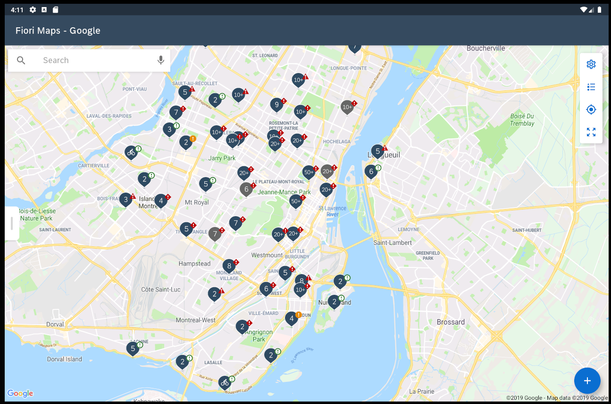 |
|---|
| Goog map view |
| 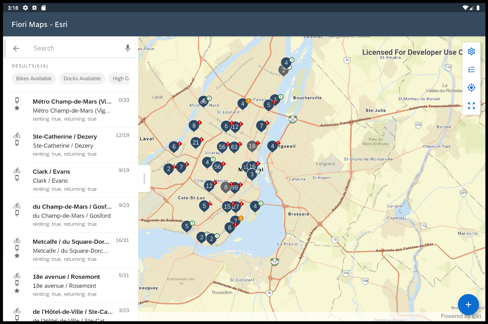 |
|---|
| Esri map view |
Examples of map views on a phone:
| 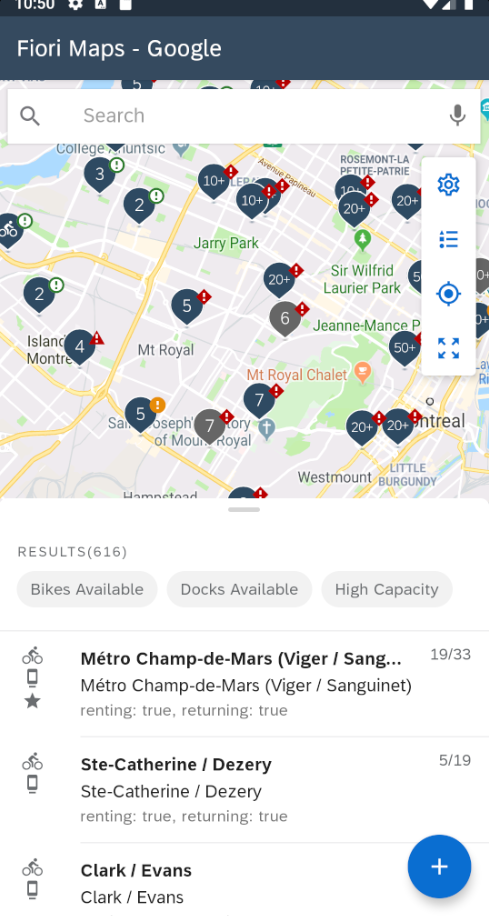 | 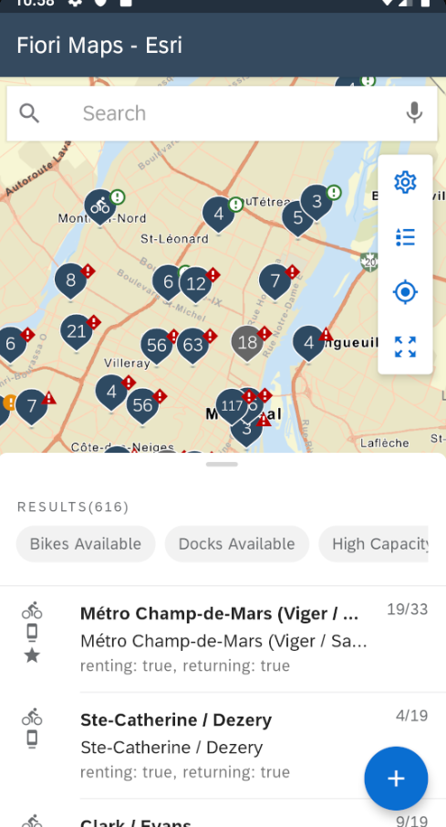 |
|---|---|
| Google map View | Esri map View |
Components¶
The FioriMapView consists of several sub-components that you have access to.
Markers¶
Markers show the location of a business object on the map. A marker can optionally include an icon and/or a numeric label.
| 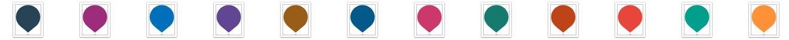 |
|---|
| Default marker icons in various colors |
To create a marker and add it to the map, use the FioriMarkerOptions class and add the marker to the MapActionProvider. For example:
FioriMarkerOptions sapWaterlooMarkerOptions = new FioriMarkerOptions.Builder()
.point(sapWaterloo)
.icon(R.drawable.sap_logo_small)
.title("SAP Labs Waterloo")
.color(getColor(COLOR_RESOURCES[0]))
.build();
mActionProvider.addMarker(sapWaterlooMarkerOptions);
Layers¶
Layers are a group of map geometry objects implemented by FioriMarkerOptions that are displayed altogether on the map view. Each layer can be shown or hidden by calling actionProvider.showLayer() or actionProvider.hideLayer() method.
In the demo application, three layers are defined:
- Main Street Stations Layer: markers as defined to represent a main street station for bike rentals.
- Other Stations Layer: markers as defined to represent any other stations for bike rentals.
- Graphics Layer: map geometries in the shape of point, polyline or polygon.
By toggling the switch buttons in the Settings view, user can choose to display any one or two or three layers on the map view. For example:
| 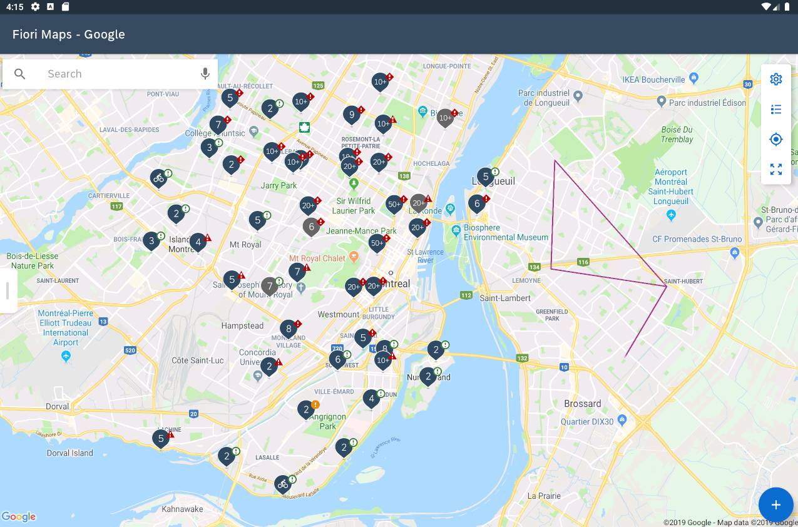 |
|---|
| Show All Layers on Google Map |
When user chooses to switch off the "Other Stations" and "Graphics" layers on the Settings view, only the Main Street Stations layer will be left shown on the map.
| 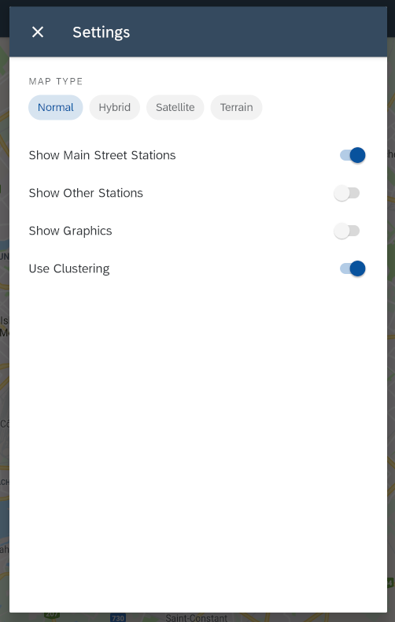 |
|---|
| Settings to Turn Off Layers on Google Map |
| 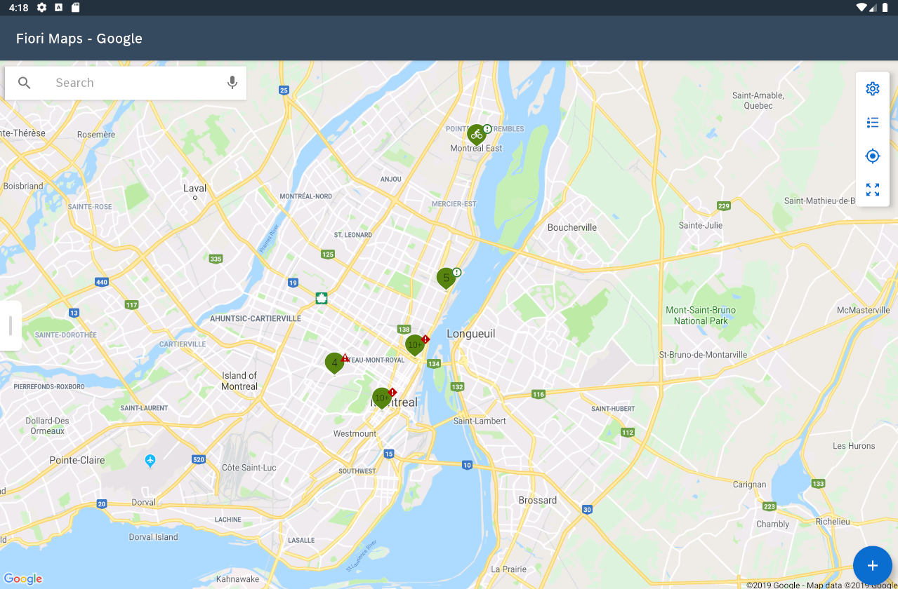 |
|---|
| Show Only Main Street Stations Layer on Google Map |
Clustering¶
Clustering is a good option to reduce visual clutter on the map when there are many markers in the same area. Clustering groups two or more markers into a single marker, when the markers are displayed close to each other. Proximity is determined by the maps zoom level. As the map is zoomed out, and the distance on the display between markers is reduced, more markers will be added to their neighboring clusters. When markers are clustered, the number of markers in the cluster appears on the  . Clustering can be turned on and off by calling
. Clustering can be turned on and off by calling setClustering(true/false) on the ActionProvider.
Toolbar¶
Toolbar, overlaid and anchored to the upper right corner of the map view, contains buttons for common map functionality. By default the buttons are settings, legend, current location, and zoom level. You may add your own custom buttons.
| 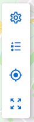 |
|---|
| Toolbar with default buttons |
You access the toolbar by calling getToolbar() on FioriMapView. Buttons are added to the toolbar as a collection in the method setupToolbar() of the main activity:
private void setupToolbar() {
// Setup toolbar buttons.
SettingsButton settingsButton = new SettingsButton(mMapView.getToolbar().getContext());
LegendButton legendButton = new LegendButton(mMapView.getToolbar().getContext());
LocationButton locationButton = new LocationButton(mMapView.getToolbar().getContext());
ZoomExtentButton extentButton = new ZoomExtentButton(mMapView.getToolbar().getContext());
ImageButton[] buttons = {settingsButton, legendButton, locationButton, extentButton};
mMapView.getToolbar().addButtons(Arrays.asList(buttons));
}
Settings¶
If a Settings button is added to the toolbar and a Settings view is defined in your own map application, when user clicks on the Settings button from the toolbar, a Settings view will be displayed.
| Settings to Turn Off Layers on Google Map |
The Settings view is NOT included in the SDK but rather needs to be implemented based on your own requirements. An example of the implementation of the Settings view in the demo application can be found here.
Legend¶
When the Legend button is clicked on, a legend view with types of objects that have been added to the map is displayed next to the tool bar.
| 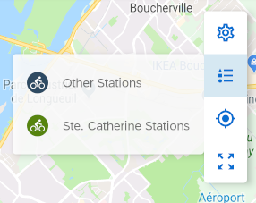 | 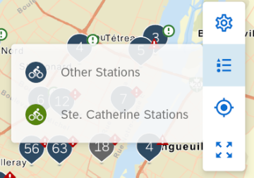 |
|---|---|
| Google map legend on a tablet | Esri map legend on a phone |
Legend will always be created when a FioriMarkerOptions is created, if legend title is missing, it'll use marker title instead. You may also assign a title to a legend by calling getMapViewModel().setLegendTitle() on the FioriMapView.
FioriMarkerOptions markerOptions = new FioriMarkerOptions.Builder().
point(new FioriPoint(station.getLat(), station.getLon())).
legendTitle(MAIN_STREET_STATIONS_LAYER).
title(station.getName()).
layer(MAIN_STREET_STATIONS_LAYER).
priorityIcon(resourceId).
clusteringId(CLUSTERING_ID).
icon(R.drawable.ic_directions_bike_white_24dp).
color(getResources().getColor(R.color.maps_marker_color_2, null)).
tag(station.getStationId()).
build();
Current Location¶
If the LocationButton is added to the toolbar, and user taps on it, the map controls will reposition the map with the current location centered in the map view. An indicator is displayed at the current location. The indicator may also be circled by an accuracy indicator. The larger the indicator, the lower the accuracy. Depending on current zoom level, the map may also be zoomed in. User must grant permission to display current location.
| 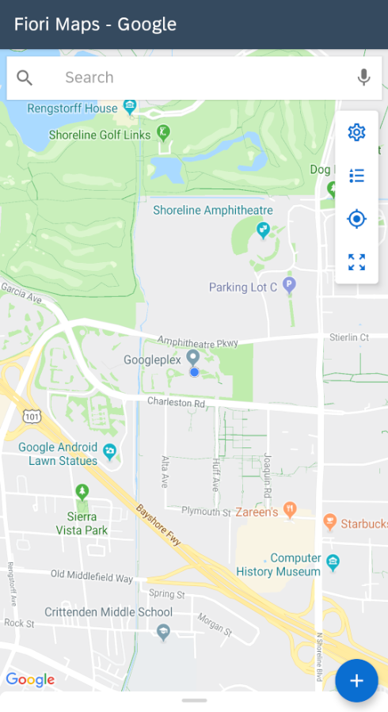 | 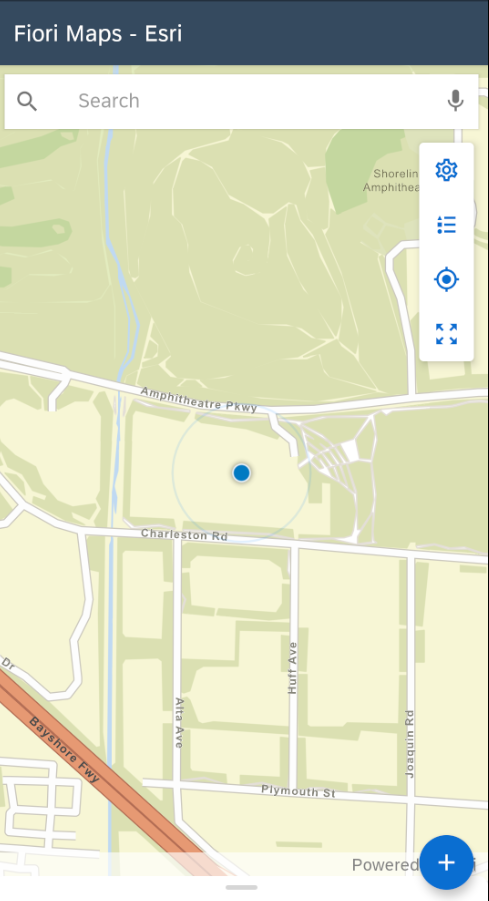 |
|---|---|
| Show current location on Google map | Show current location on Esri map |
Zoom Levels¶
If the ZoomExtentButton is added to the toolbar, and user taps on it, the map is zoomed (in or out) so that all markers on the map become visible.
| 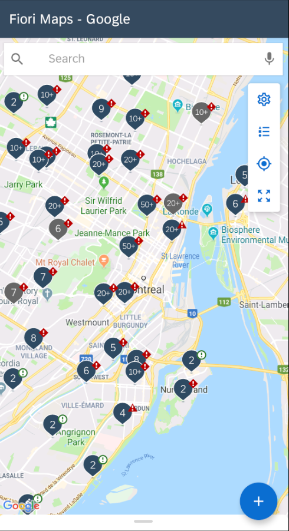 | 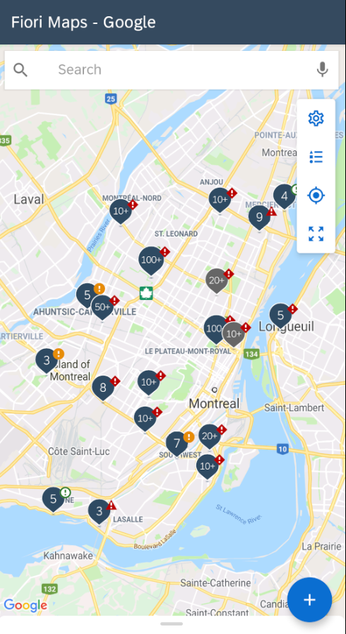 |
|---|---|
| Default zoom level | Zoomed out view |
Details Panel¶
The detail panel is a view that can show a variety of information. It can show a list of search results, or details for a marker or marker cluster when it is tapped on.
In landscape mode, on a tablet, the details panel is displayed on the left side of the screen overlaying on top of the map view. A slide control is always visible that allows user to hide or show the panel.
| 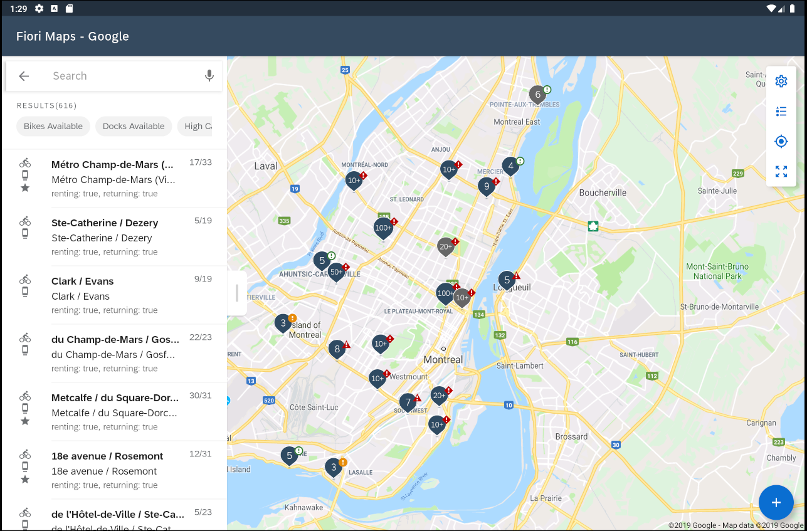 |
|---|
| Details Panel showing search results on Google map on a Tablet |
| 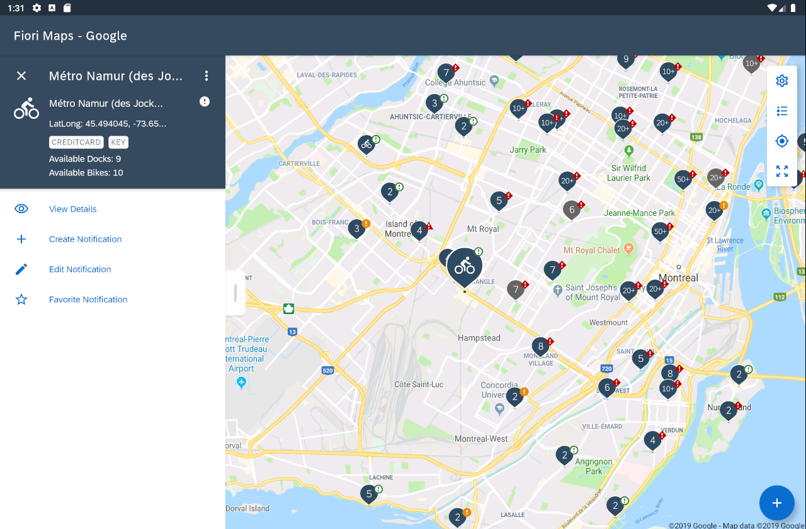 |
|---|
| Details Panel showing details for a marker on Google map on a Tablet |
| 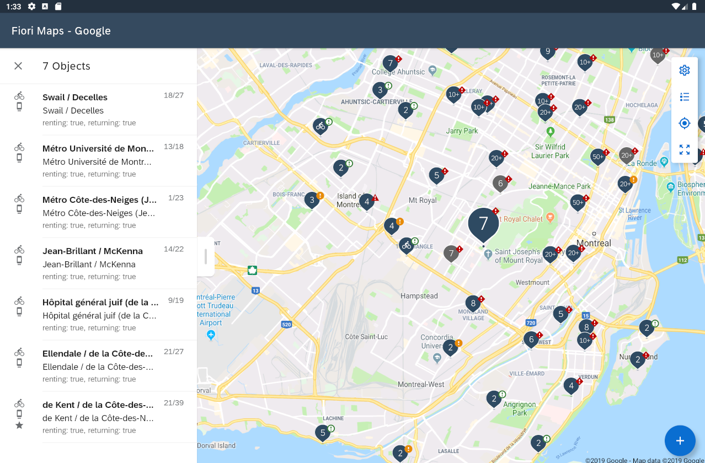 |
|---|
| Details Panel showing list of objects in a marker cluster on Google map on a Tablet |
On a phone or in portrait mode on a tablet, the details panel is displayed on the bottom of the screen overlaying on top of the map view. The slide control, being dragged up and down, supports two modes of expansion: full screen or half screen.
 |
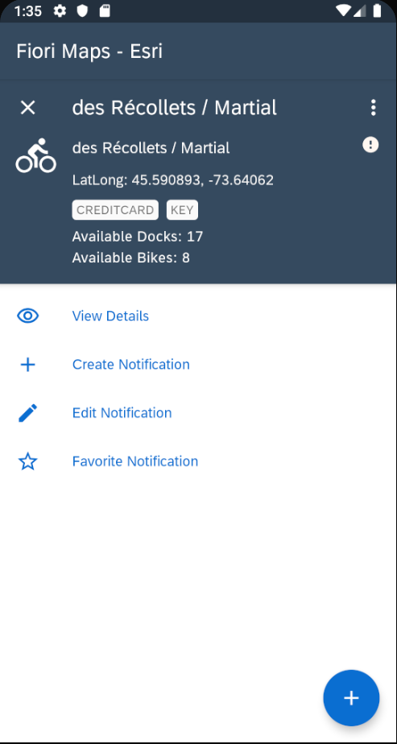 |
|---|---|
| Expanded to half screen on Esri map on a phone | Expanded to full screen on Esri map on a phone |
| 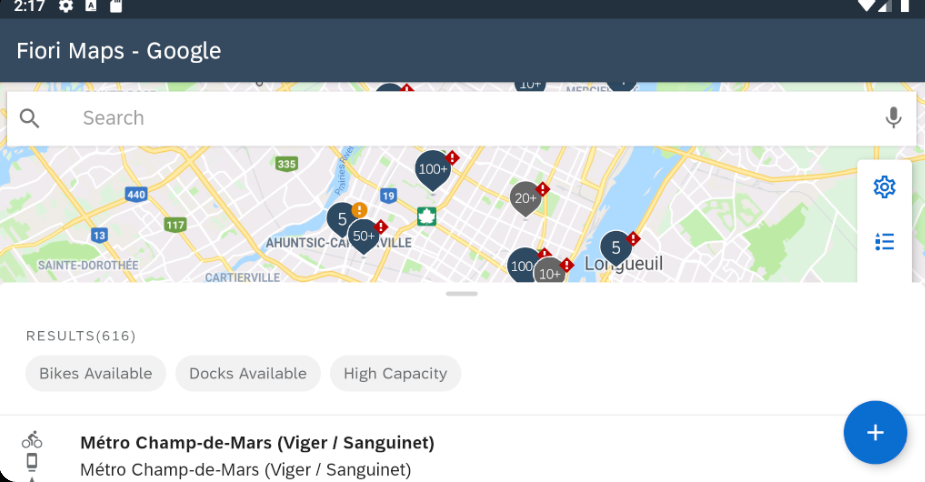 | 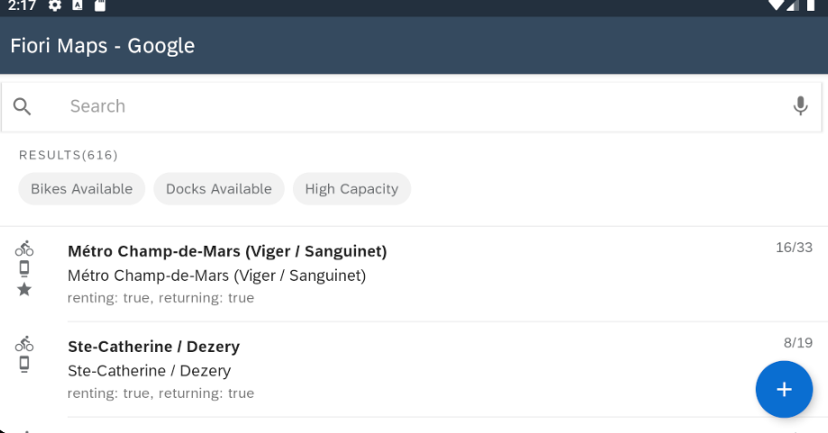 |
|---|---|
| Expanded to half screen on Google map on a phone | Expanded to full screen on Google map on a phone |
Edit Annotations¶
The map view includes controls that allow a user to interactively add geometry to the map, called Edit Annotations, which is enabled by the FloatingActionButton located on the bottom right corner of the map view.
To start the editing mode of the map, call setEditable(true) on the map view.
 |
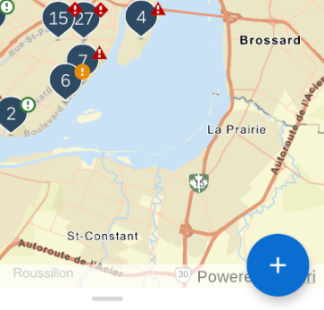 |
|---|---|
Edit button on Google map on tablet |
Edit button on Esri map on phone |
Clicking on the button, the Edit Annotations view will be displayed in the same location where the Details Panel was. On the Edit Annotations view, you have access to different controls which allow you to add point(s) by tapping a location on the map or by entering an address. Depending on the type of geometry you have selected, points, polylines or polygons will be created on the map.
| 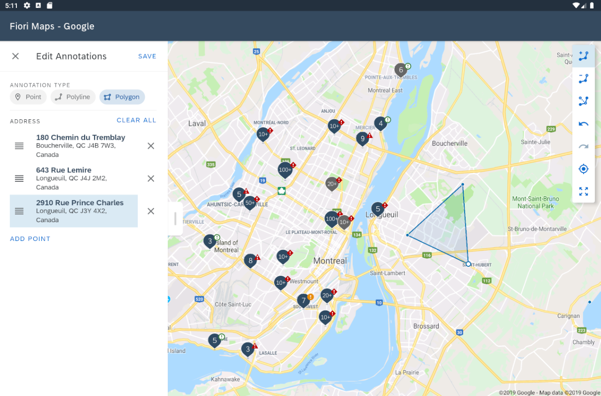 |
|---|
| Edit Annotations view with polygon on Google map on a Tablet |
Notice that the toolbar on the upper right corner of the map view has been changed to a different set of buttons. These buttons are:
| 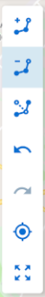 |
|---|
| Toolbar with default buttons in Edit mode |
- Add: set the editor mode to adding points. Tapping on the map adds a new point.
- Remove: sets the editor mode to removing points. Tapping on one of the existing points remove that point from the map.
- Branch: sets the editor mode to creating branches. When the map is tapped, the current polyline or polygon is extended from the currently selected point.
- Undo: undo the last editing action.
- Redo: redo the last editing action.
- Current location: show the current location on the map.
- Zoom extents: show the currently edited geometry fully on the screen.
Clicking on one of the buttons will switch from one editing mode to another.
| 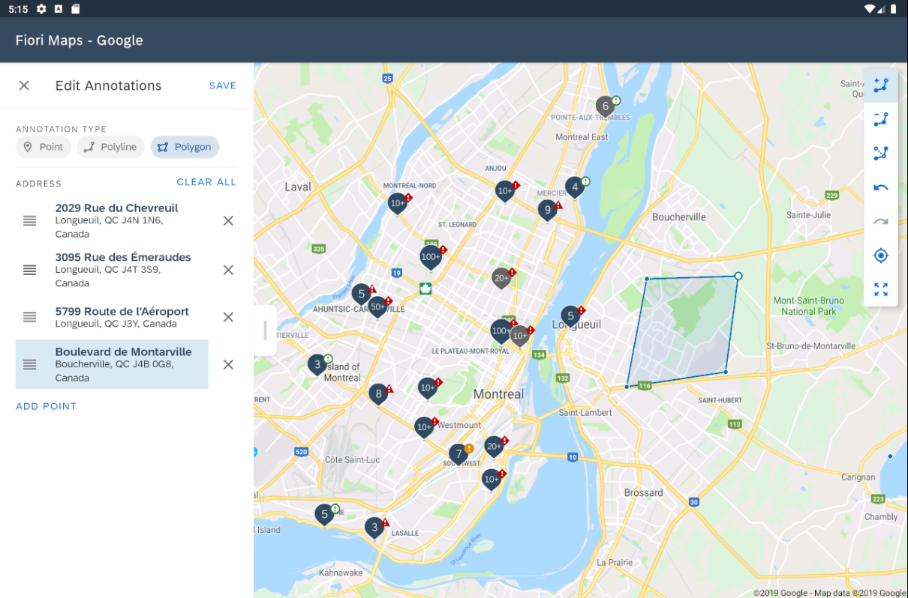 |
|---|
| Add a point to a polygon on Google Map |
| 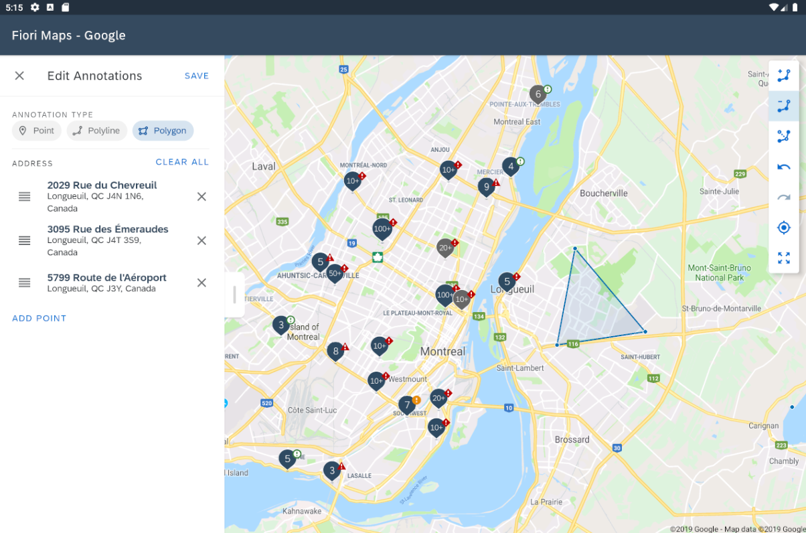 |
|---|
| Remove a point from a polygon on Google Map |
| 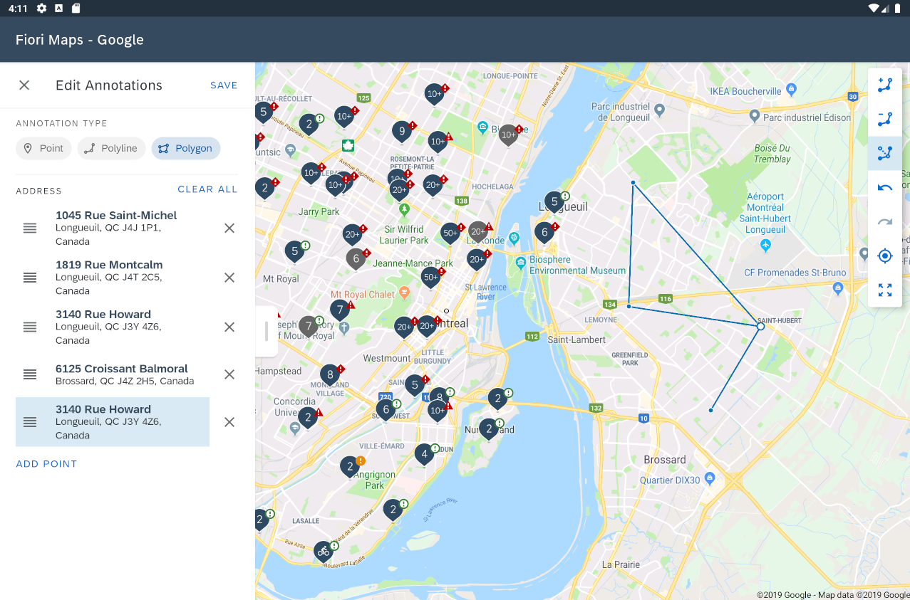 |
|---|
| Branch out from a point on a polygon on Google Map |
Besides tapping on a location on the map, you may also input an address in the Search bar to add points.
| Searching an address to add a point on Google Map |
| 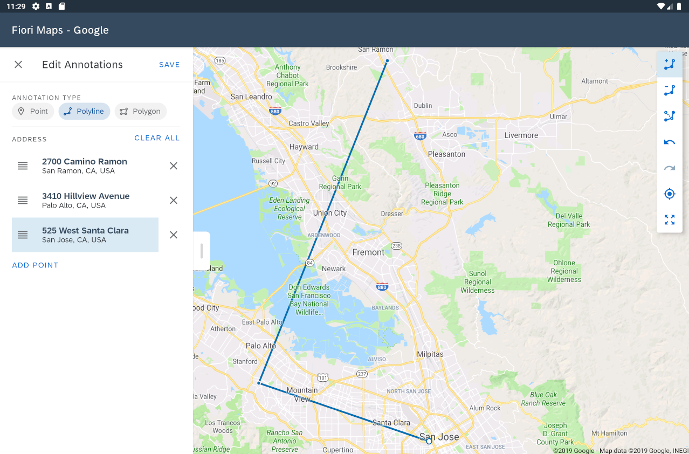 |
|---|
| A polyline added by street addresses on Google Map |
Usage¶
FioriMapView is designed to use the whole screen. You can put one of its concrete implementations (GoogleFioriMapView or EsriFioriMapView) in a FrameLayout. All the UI elements of the map view, including markers, toolbar, search bar, list panel and preview panel, etc., are provided by the SDK. Your own application is responsible for providing data and interacting with the map via one of the implementations of MapActionProvider (GoogleMapActionProvider or EsriMapActionProvider). Details can be found in the following Construction section.
Construction¶
The following section of this documentation will focus on how to utilize Map Controls in your own application to create a map-based view of the business objects. In this example, the bike sharing application displays the locations of bike docking stations on the map as well as detailed bike rental information for each station. It also provides the functionality of searching stations, filtering search results and drawing geometries on the map,
In order to represent the bike stations, a few data model classes were created:
- Station: a bike docking station containing a
StationInformationand aStationStatus - StationInformation: the set of static attributes about a bike docking station such as location, capacity, rental methods, payment methods, etc.
- StationStatus: the set of dynamic attributes about a bike docking station including numbers of available bikes or docks, whether or not to allow renting or returning, etc.
The above data models should be replaced by your own business objects.
YourOwnMapsActivity¶
This is your main activity class which extends AppCompatActivity like most of the activity classes. In this class, you will have to define a few required class members:
private FioriMapView mMapView;
private FioriMapSearchView mFioriMapSearchView;
private MapActionProvider mMapActionProvider;
private MapListPanel mMapListPanel;
private MapResultsAdapter mMapResultsAdapter;
private BikeViewModel bikeViewModel;
All of the objects except for the last two are from classes provided by the SDK.
FioriMapView: The map implementation independent view that allows the presentation of maps, map specific toolbars, editing of graphic elements (points, polylines, and polygons), with customizable views of settings, search results, and details. Depending on the type of the map API you choose to use, it should be eitherGoogleFioriMapVieworEsriFioriMapViewin your application.FioriMapSearchView: The map search view which extends theFioriSearchView.MapActionProvider: Google map and Esri map each have their own implementation of thisActionProviderwhich handles actions from the toolbar.MapListPanel: A panel within map bottom sheet or side sheet to show list of map objects.
You will need to implement the other two classes based on the business logic of your own application.
MapResultsAdapter: this is the mainRecyclerView.Adapterclass that binds data of business objects to the UI display on theMapListPanel. It also implements two other interfaces to support data filtering and clustering display.BikeViewModel: this should be replaced with theViewModelclass of your own business object.
OnCreated()¶
@Override
protected void onCreate(Bundle savedInstanceState) {
super.onCreate(savedInstanceState);
// Get the intent, verify the action and get the query
Intent intent = getIntent();
if (Intent.ACTION_SEARCH.equals(intent.getAction())) {
String query = intent.getStringExtra(SearchManager.QUERY);
performSearch(query);
}
mMapView = initMapView(savedInstanceState);
if (savedInstanceState != null) {
mMapTypeIndex = savedInstanceState.getInt("MapType", 0);
mShowMainStreetStationsLayer = savedInstanceState.getBoolean("ShowMainStreetStationsLayer", true);
mShowOtherStationsLayer = savedInstanceState.getBoolean("ShowOtherStationsLayer", true);
mGraphicsLayer = savedInstanceState.getBoolean("ShowGraphicsLayer", true);
mUseClustering = savedInstanceState.getBoolean("UseClustering", true);
}
mFioriMapSearchView = findViewById(R.id.fiori_map_search_view);
bikeViewModel = ViewModelProviders.of(this).get(BikeViewModel.class);
setupEditor();
}
In onCreate(), you will accomplish the following:
- Perform the search if the intent action is SEARCH.
- Initialize the map view with
savedInstanceState. - Assign initial values to a few other class variables.
- Get the reference to the search view.
- Initialize the view model of your business object. In this example, it's the
BikeViewModel. - Set up the editor to handle its
saveevent. ThesetupEditor()method ought to be custom implemented based on the need of your business logic. An example of this method is shown below.
private void setupEditor() {
// Handle the editor's save event.
mMapView.getEditorView().setOnSaveListener(new EditorView.OnSaveListener() {
@Override
public void onSaveEdit(Annotation annotation) {
String message = null;
if (annotation instanceof PointAnnotation) {
message = getResources().getString(R.string.map_edit_results_point);
} else if (annotation instanceof PolylineAnnotation) {
message = String.format(getResources().getString(R.string.map_edit_results_polyline), annotation.getPoints().size());
} else if (annotation instanceof PolygonAnnotation) {
message = String.format(getResources().getString(R.string.map_edit_results_polygon), annotation.getPoints().size());
}
AlertDialog.Builder builder = new AlertDialog.Builder(mMapView.getContext(), com.sap.cloud.mobile.fiori.R.style.FioriAlertDialogStyle);
builder.setMessage(message);
builder.setPositiveButton(R.string.map_edit_button_positive, new DialogInterface.OnClickListener() {
@Override
public void onClick(DialogInterface dialogInterface, int i) {
// Close the editor.
mMapView.setEditable(false);
if (annotation instanceof PointAnnotation) {
getActionProvider().addCircle(
new FioriCircleOptions.Builder().center((FioriPoint) annotation.getPoints().get(0)).
radius(40).
strokeColor(getResources().getColor(R.color.maps_marker_color_5, null)).
fillColor(getResources().getColor(R.color.maps_marker_color_6, null)).
layer(GRAPHICS_LAYER).
title("Editor Circle").
build());
} else if (annotation instanceof PolylineAnnotation) {
getActionProvider().addPolyline(
new FioriPolylineOptions.Builder().addAll(annotation.getPoints()).
color(getResources().getColor(R.color.maps_marker_color_3, null)).
strokeWidth(4).
layer(GRAPHICS_LAYER).
title("Editor Polyline").
build());
} else if (annotation instanceof PolygonAnnotation) {
getActionProvider().addPolygon(
new FioriPolygonOptions.Builder().addAll(annotation.getPoints()).
strokeColor(getResources().getColor(R.color.maps_marker_color_3, null)).
fillColor(getResources().getColor(R.color.maps_marker_color_4, null)).
strokeWidth(4).
layer(GRAPHICS_LAYER).
title("Editor Polygon").
build());
}
}
});
builder.setNegativeButton(R.string.map_edit_button_negative, new DialogInterface.OnClickListener() {
@Override
public void onClick(DialogInterface dialogInterface, int i) {
dialogInterface.cancel();
}
});
AlertDialog dialog = builder.create();
dialog.show();
}
});
}
Initialize Map View¶
@NonNull
protected FioriMapView initMapView(Bundle savedInstanceState) {
setContentView(R.layout.activity_main);
GoogleFioriMapView mapView = findViewById(R.id.googleFioriMap);
mapView.onCreate(savedInstanceState); // Always call this in activity's onCreate.
mapView.setOnMapCreatedListener(this);
return mapView;
}
@NonNull
protected EsriFioriMapView initMapView(Bundle savedInstanceState) {
setContentView(R.layout.activity_main);
EsriFioriMapView mapView = findViewById(R.id.mapView);
mapView.getMap().addDoneLoadingListener(() -> onMapCreated());
return mapView;
}
Once the map view has been created, both types of map view will call the method onMapCreated() where a few more tasks are carried out.
- Get (or create) the action provider.
- Set up the
AnnotationInfoAdapterwhich is used to show the details of a selected business object (such as a bike station) in the map preview panel. - Set up the list adapter which is used to display list of business objects (such as list of bike stations) with or without filters in the map list panel.
- Set up the tool bar.
- Configure the settings options in the settings view.
- Initialize the view point.
- Collect the business data asynchronously.
- Initialize the search view.
public void onMapCreated() {
getActionProvider();
setupAnnotationInfoAdapter();
setListAdapter();
setupToolbar();
setupSettingsView();
initCamera();
if (bikeViewModel.stationsMap == null || bikeViewModel.stationsMap.isEmpty()) {
// Collect bike data for city of interest asynchronously.
new GetBikeDataTask().execute();
}
initSearchView();
}
getActionProvider()¶
@NonNull
protected MapActionProvider getActionProvider() {
if (mMapActionProvider == null) {
mMapActionProvider = createActionProvider();
}
return mMapActionProvider;
}
@NonNull
protected GoogleMapActionProvider createActionProvider() {
return new GoogleMapActionProvider(getMapView(), this);
}
@NonNull
protected EsriMapActionProvider createActionProvider() {
return new EsriMapActionProvider(getMapView(), this);
}
setupAnnotationInfoAdapter()¶
private void setupAnnotationInfoAdapter() {
AnnotationInfoAdapter infoProvider = new StationInfoAdapter(bikeViewModel);
getActionProvider().setAnnotationInfoAdapter(infoProvider);
}
The StationInfoAdapter is an implementation of the interface AnnotationInfoAdapter, which displays the detailed bike station information on a map preview panel.
/**
* Interface to be implemented by application to retrieve annotation info from tag.
*/
public interface AnnotationInfoAdapter {
/**
* Returns the detailed annotation info
* @param tag tag that's associated with the annotation
*/
Object getInfo(Object tag);
/**
* Shows the annotation info in the given {@link MapPreviewPanel}
* @param mapPreviewPanel the view to present info
* @param info annotation info
*/
void onBindView(MapPreviewPanel mapPreviewPanel, Object info);
}
setListAdapter()¶
private void setListAdapter() {
if (mMapListPanel == null) {
mMapListPanel = mMapView.getMapListPanel();
mMapResultsAdapter = new MapResultsAdapter(bikeViewModel, getActionProvider());
mMapListPanel.setAdapter(mMapResultsAdapter);
FilterFormCell filterFormCell = mMapListPanel.getFilterFormCell();
filterFormCell.setValueOptions(new String[]{"Bikes Available", "Docks Available", "High Capacity"});
filterFormCell.setCellValueChangeListener(
new FormCell.CellValueChangeListener<List<Integer>>() {
@Override
protected void cellChangeHandler(@Nullable List<Integer> value) {
mMapResultsAdapter.setFilterValues(value);
}
});
}
}
The MapResultsAdapter is a RecyclerView.Adapter that binds the business objects to the MapListPanel and also implements the MapListAdapter interface in MapListPanel that enables passing the selected cluster node to update the content of the displayed list. For detailed implementation of this class, check out The MapResultsAdapter section.
/**
* Additional interface that must be implemented by client of {@link MapListPanel}
*/
public interface MapListAdapter {
/**
* Notifies the adapter that given cluster is selected. If no cluster is selected, all items
* will be shown.
*/
void clusterSelected(@Nullable List<FioriMarkerOptions> clusterMembers);
}
setupToolBar()¶
private void setupToolbar() {
// Setup toolbar buttons.
SettingsButton settingsButton = new SettingsButton(mMapView.getToolbar().getContext());
LegendButton legendButton = new LegendButton(mMapView.getToolbar().getContext());
LocationButton locationButton = new LocationButton(mMapView.getToolbar().getContext());
ZoomExtentButton extentButton = new ZoomExtentButton(mMapView.getToolbar().getContext());
ImageButton[] buttons = {settingsButton, legendButton, locationButton, extentButton};
mMapView.getToolbar().addButtons(Arrays.asList(buttons));
}
Buttons are created and added to the tool bar.
setupSettingsView()¶
private void setupSettingsView() {
View settingsView = getLayoutInflater().inflate(R.layout.sample_settings_panel, null);
// Setup selection of a different map type
ChoiceFormCell mapTypeChoice = settingsView.findViewById(R.id.map_type);
mapTypeChoice.setValueOptions(getResources().getStringArray(R.array.map_types));
mapTypeChangeListener = createMapTypeChangedListener();
mapTypeChoice.setCellValueChangeListener(mapTypeChangeListenerWrapper);
mapTypeChoice.setValue(mMapTypeIndex);
mMapView.setSettingsView(settingsView);
// Setup layer selection
SwitchFormCell mainstreetStationsLayerSwitch = settingsView.findViewById(R.id.main_street_stations_layer);
mainstreetStationsLayerSwitch.setValue(mShowMainStreetStationsLayer);
if (mShowMainStreetStationsLayer) {
getActionProvider().showLayer(MAIN_STREET_STATIONS_LAYER);
} else {
getActionProvider().hideLayer(MAIN_STREET_STATIONS_LAYER);
}
mainstreetStationsLayerSwitch.setCellValueChangeListener(new FormCell.CellValueChangeListener<Boolean>() {
@Override
protected void cellChangeHandler(@NonNull Boolean value) {
mShowMainStreetStationsLayer = value;
if (mShowMainStreetStationsLayer) {
getActionProvider().showLayer(MAIN_STREET_STATIONS_LAYER);
} else {
getActionProvider().hideLayer(MAIN_STREET_STATIONS_LAYER);
}
}
});
SwitchFormCell otherStationsLayerSwitch = settingsView.findViewById(R.id.other_stations_layer);
otherStationsLayerSwitch.setValue(mShowOtherStationsLayer);
if (mShowOtherStationsLayer) {
getActionProvider().showLayer(OTHER_STATIONS_LAYER);
} else {
getActionProvider().hideLayer(OTHER_STATIONS_LAYER);
}
otherStationsLayerSwitch.setCellValueChangeListener(new FormCell.CellValueChangeListener<Boolean>() {
@Override
protected void cellChangeHandler(@NonNull Boolean value) {
mShowOtherStationsLayer = value;
if (mShowOtherStationsLayer) {
getActionProvider().showLayer(OTHER_STATIONS_LAYER);
} else {
getActionProvider().hideLayer(OTHER_STATIONS_LAYER);
}
}
});
SwitchFormCell graphicsLayerSwitch = settingsView.findViewById(R.id.graphics_layer);
graphicsLayerSwitch.setValue(mGraphicsLayer);
if (mGraphicsLayer) {
getActionProvider().showLayer(GRAPHICS_LAYER);
} else {
getActionProvider().hideLayer(GRAPHICS_LAYER);
}
graphicsLayerSwitch.setCellValueChangeListener(new FormCell.CellValueChangeListener<Boolean>() {
@Override
protected void cellChangeHandler(@NonNull Boolean value) {
mGraphicsLayer = value;
if (mGraphicsLayer) {
getActionProvider().showLayer(GRAPHICS_LAYER);
} else {
getActionProvider().hideLayer(GRAPHICS_LAYER);
}
}
});
// Setup clustering selection.
SwitchFormCell useClusteringSwitch = settingsView.findViewById(R.id.use_clustering);
useClusteringSwitch.setValue(mUseClustering);
getActionProvider().setClustering(mUseClustering);
useClusteringSwitch.setCellValueChangeListener(new FormCell.CellValueChangeListener<Boolean>() {
@Override
protected void cellChangeHandler(@NonNull Boolean value) {
mUseClustering = value;
getActionProvider().setClustering(mUseClustering);
}
});
}
initCamera()¶
protected void initCamera() {
LatLng currentPosition = ((GoogleMapViewModel)getActionProvider().getMapViewModel()).getLatLng();
float currentZoom = ((GoogleMapViewModel)getActionProvider().getMapViewModel()).getZoom();
if (currentPosition != null && currentZoom != 0) {
// Position the camera after a lifecycle event.
getMapView().getMap().moveCamera(CameraUpdateFactory.newLatLngZoom(currentPosition, currentZoom));
} else {
// Move the camera to the city of interest and zoom to city level.
LatLng city = new LatLng(CITY_LAT, CITY_LONG);
CameraPosition cameraPosition = new CameraPosition.Builder().zoom(12).target(city).build();
getMapView().getMap().animateCamera(CameraUpdateFactory.newCameraPosition(cameraPosition));
}
}
@NonNull
protected EsriFioriMapView initMapView(Bundle savedInstanceState) {
setContentView(R.layout.activity_main);
EsriFioriMapView mapView = findViewById(R.id.mapView);
mapView.getMap().addDoneLoadingListener(() -> onMapCreated());
return mapView;
}
GetBikeDataTask¶
private class GetBikeDataTask extends AsyncTask<Void, Integer, Void> {
@Override
protected Void doInBackground(Void... params) {
...
}
@Override
protected void onPostExecute(Void aVoid) {
...
}
}
Create your own asynchronous data collection class to retrieve business objects on a map from any data service(s).
initSearchView()¶
private void initSearchView() {
if (mFioriMapSearchView != null) {
SearchManager searchManager = (SearchManager) getSystemService(Context.SEARCH_SERVICE);
mFioriMapSearchView.setSearchableInfo(searchManager.getSearchableInfo(getComponentName()));
mFioriMapSearchView.setOnQueryTextListener(new SearchView.OnQueryTextListener() {
@Override
public boolean onQueryTextSubmit(String query) {
performSearch(query);
mMapView.exitSearchMode();
return true;
}
@Override
public boolean onQueryTextChange(String newText) {
mMapResultsAdapter.getFilter().filter(newText);
return true;
}
});
}
}
onNewIntent()¶
@Override
protected void onNewIntent(Intent intent) {
super.onNewIntent(intent);
if (Intent.ACTION_SEARCH.equals(intent.getAction())) {
String query = intent.getStringExtra(SearchManager.QUERY);
performSearch(query);
}
}
In singleTop launch mode, the onNewIntent() method has to be implemented and will be called in case the activity is restarted. An example of the performSearch() implementation is shown below:
private void performSearch(String query) {
String normalizedQuery = query.toLowerCase(Locale.getDefault());
LinkedList<String> results = new LinkedList<>();
for (String searchDataObject : bikeViewModel.stationAddressToId.keySet()) {
if (searchDataObject != null && searchDataObject.contains(normalizedQuery)) {
results.add(bikeViewModel.stationAddressToId.get(searchDataObject));
}
}
mMapView.setPanelContent(showSearchResult(results));
mMapView.showContentPanel(false);
}
private View showSearchResult(LinkedList<String> searchResults) {
mMapResultsAdapter.setStationIds(searchResults);
return mMapListPanel;
}
onRequestPermissionsResult()¶
The location button checks that permission has been granted for either ACCESS_FINE_LOCATION or ACCESS_COARSE_LOCATION. If permission has been granted, it goes ahead and indicates the devices location. Otherwise it requests permission. You will need to add an entry in your applications manifest indicating what location permission you want to request. The following example requests fine location permission:
<uses-permission android:name="android.permission.ACCESS_FINE_LOCATION"/>
Also add the following method to the map activity to retrieve and handle permission requests:
@Override
public void onRequestPermissionsResult(int requestCode, String[] permissions, int[] grantResults) {
getActionProvider().onRequestPermissionsResult(requestCode, permissions, grantResults);
}
The MapResultsAdapter¶
This is the main adapter class that populates the list of business objects (i.e. bike stations) on the map, to the RecyclerView of the MapListPanel displayed either on the bottom or the left side of the screen.
- It has its own
ViewHolderimplementation. - It extends the class
RecyclerView.Adapter. - It implements the interface
MapListPanel.MapListAdapter - It implements the
applyQuery()method to search for results. - It implements the
Filterableinterface to apply filter on search results.
```java
public class MapResultsAdapter extends RecyclerView.Adapter
1 2 3 4 5 6 7 8 9 10 11 12 13 | |
} ```
An Inner Class ViewHolder¶
In both the Google map and Esri map, ObjectCell is used to display each item in the list of bike stations.
java
public static class ViewHolder extends RecyclerView.ViewHolder {
public ObjectCell objectCell;
public ViewHolder(@NonNull View itemView) {
super(itemView);
if (itemView instanceof ObjectCell) {
objectCell = (ObjectCell) itemView;
}
}
}
A Subclass of RecyclerView.Adapter¶
Three primary methods of RecyclerView.Adapter are overridden in MapResultsAdapter:
onCreateViewHolder: to inflate the item layout and create the holder.onBindViewHolder: to set the view attributes based on the data.getItemCount: to determine the number of items.
onCreateViewHolder()¶
@NonNull
@Override
public ViewHolder onCreateViewHolder(@NonNull ViewGroup parent, int viewType) {
ObjectCell cell = new ObjectCell(parent.getContext());
cell.setPreserveIconStackSpacing(true);
cell.setPreserveDetailImageSpacing(false);
ViewHolder viewHolder = new ViewHolder(cell);
return viewHolder;
}
onBindViewHolder()¶
@Override
public void onBindViewHolder(@NonNull ViewHolder holder, int position) {
Station station = mFilteredStations.get(position);
StationInformation stationInformation = station.getStationInformation();
StationStatus stationStatus = station.getStationStatus();
ObjectCell resultCell = holder.objectCell;
resultCell.clearIcons();
int i = 0;
if (stationStatus.getNumberOfBikesAvailable() > 0) {
resultCell.setIcon(R.drawable.ic_directions_bike_black_24dp, i++,
R.string.bikes_available);
}
if (stationStatus.getNumberOfDocksAvailable() > 0) {
resultCell.setIcon(R.drawable.ic_dock_black_24dp, i++, R.string.docks_available);
}
if (stationInformation.getCapacity() >= HIGH_CAPACITY_BAR) {
resultCell.setIcon(R.drawable.ic_star_black_24dp, i++, R.string.high_capacity);
}
resultCell.setHeadline(stationInformation.getAddress());
resultCell.setStatus(
stationStatus.getNumberOfBikesAvailable() + "/" + stationInformation.getCapacity(),
1);
resultCell.setSubheadline(stationInformation.getName());
resultCell.setFootnote("renting: " + (stationStatus.getRenting() == 1) + ", returning: " + (
stationStatus.getReturning() == 1));
resultCell.setDynamicStatusWidth(true);
resultCell.setOnClickListener(v -> {
searchResultSelected(stationInformation.getAddress());
});
}
getItemCount()¶
@Override
public int getItemCount() {
return mFilteredStations.size();
}
Implementation of MapListPanel.MapListAdapter Interface¶
The method clusterSelected() has to be implemented, which notifies the adapter that given cluster is selected. If no cluster is selected, all items will be shown.
@Override
public void clusterSelected(@Nullable List<FioriMarkerOptions> clusterMembers) {
if (clusterMembers != null && !clusterMembers.isEmpty()) {
List<String> stationIds = new ArrayList<>();
for (FioriMarkerOptions clusterMember : clusterMembers) {
Object tag = clusterMember.tag;
if (tag != null) {
stationIds.add(tag.toString());
}
}
applyStationIds(stationIds);
} else if (mQuery != null){
applyQuery(mQuery);
applyFilters();
} else {
applyStationIds(new ArrayList<>(bikeViewModel.stationsMap.keySet()));
}
notifyDataSetChanged();
}
Implementation of Search Functions on Business Objects¶
private void applyQuery(CharSequence query) {
mQuery = query;
if (mQuery == null || mQuery.length() == 0 ) {
applyStationIds(new ArrayList<>(bikeViewModel.stationsMap.keySet()));
} else {
String normalizedQuery = mQuery.toString().toLowerCase(Locale.getDefault());
LinkedList<String> results = new LinkedList<>();
for (String searchDataObject : bikeViewModel.stationAddressToId.keySet()) {
if (searchDataObject != null && searchDataObject.contains(normalizedQuery)) {
results.add(bikeViewModel.stationAddressToId.get(searchDataObject));
}
}
applyStationIds(results);
}
}
Implementation of Filterable Interface¶
A custom filter needs to be implemented to filter data results of your own business objects.
@Override
public Filter getFilter() {
if (mFilter == null) {
mFilter = new BikeStationFilter();
}
return mFilter;
}
private class BikeStationFilter extends Filter {
@Override
protected FilterResults performFiltering(CharSequence constraint) {
applyQuery(constraint);
applyFilters();
FilterResults filterResults = new FilterResults();
filterResults.count = mFilteredStations.size();
filterResults.values = mFilteredStations;
return filterResults;
}
@Override
protected void publishResults(CharSequence constraint, FilterResults results) {
notifyDataSetChanged();
}
}
The Custom ViewModel¶
You will need to implement your own custom ViewModel that could store and manage UI-related data throughout the lifecycle of your application. In this example, BikeViewModel is implemented with three HashMaps that store the data related to bike stations and their detailed information and addresses.
public class BikeViewModel extends ViewModel {
/**
* Station id to {@link StationInformation}
*/
@Nullable
public Map<String, StationInformation> stationsMap = new HashMap<>();
/**
* Station id to {@link StationStatus}
*/
@Nullable
public Map<String, StationStatus> stationStatusMap = new HashMap<>();
/**
* Station address to station id
*/
@Nullable
public Map<String, String> stationAddressToId = new HashMap<>();
}